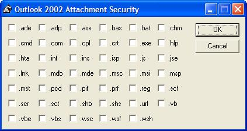

From Microsoft's knowledge base (Q290497):
Outlook 2002 includes a new security feature that blocks attachments considered unsafe. If you receive an e-mail message that contains one of the blocked file types, you may see the following warning message:
Outlook blocked access to the following potentially unsafe attachments: [...]
Although access to the attachment has been blocked, the attachment still exists in the message.
The article goes on to explain how to manipulate the registry to allow access to these attachments. This applet does that for you.

Please note: Microsoft blocked access to these files for a reason - make sure that you understand the consequences of opening attachments that would have been blocked. VisionTech Limited can accept no responsibility for any loss or other consequences resulting from the use of this tool.
Update 18-Feb-2004: I've created a new version of the applet that supports Outlook 2003. Download for Outlook 2003